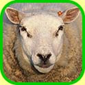

2 April 1997
"The Tragedy of the Commons"

As I described in my article on Game Theory, many
social and ethical dilemmas are related to those in the famous Prisoner's
Dilemma. One is outlined in Garrett Hardin's classic paper,
"The Tragedy of the Commons." In this 1968 paper, Hardin concisely assesses human greed and intractability as
they relate to sharing common property. He illustrates
the point with the metaphor of a grassy commons, available to all the farmers
for feeding their herds. In light of the recent hubbub surrounding
the sheep cloning from whence sprang Dolly, I could not resist meshing Hardin's social insights with a virtual
simulation of one such animal herd. Read on, lovers of computerized life
simulations, protectors of animals, and prospective farmers alike!
"Deep Magic," you may say, "has nothing to do with sheep or cloning. Furthermore, I care little what Farmer John or Farmer Smith1 choose to do on their own demesnes! Such trite matters are of no consequence to hackers extraordinaire such as I." Ah, but they are! With the explosion of the Internet and the sheer quantity of detritus being strewn and forcibly pushed about our virtual environment, it behooves us2 to learn the underlying rationale behind people's daily actions. Furthermore, an entertaining and educational example of cloning via sheep-modeling in Java may help clarify some of the issues our president has been hastily deciding for us.
In this article I present Java applets that put you in the shoes of a modern farmer. Experience first-hand the joys of shepherding with no mess, no fuss and no odorous lanolin! Destroy a virtual natural environment, saving the homes of real-world bunnies and badgers galore! Avoid potentially nasty religious repercussions, impress your friends, practice your farming skills, and be the first on your block to truly understand the issues our agricultural friends ponder at this very moment!
Ovine gluttony
In "The Tragedy of the Commons," Hardin discusses the sharing of a grassy meadow amongst all farmers. He claims that, as each farmer
ponders whether to add one more animal to the herd, the decision has two
components: a positive one, based on the
simple addition of an animal to the farmer's herd; and a negative one, based on
the additional grazing created by one more animal.
The problem with the negative component is that its effect is distributed
over all the farmers, as they share the grassy commons.
Typically, farmers will choose to add another animal to their individual herds, as the benefits outweigh the negative aspects. However, since all farmers reach this same conclusion, the commons rapidly grows overcrowded and is rendered devoid of grass in short order. In his essay, "The Voter's Paradox," Leon Felkins calls this a "diabolical" act on the part of the farmers. This general type of dilemma can be unpleasantly compared to, among other things, the act of littering3, software piracy4, and even voter apathy5.
In our first Java applet6, you play the part of a naive young farmer learning the ways of the world. The white sheep comprising your flock are rather simple-minded; they devour grass at a horrendous pace, moving on to greener pastures as soon as they have consumed a majority of the lush, verdant foliage readily available.
In the interest of modeling Hardin's theoretical shared commons, you will see black sheep appear in the crowd periodically, entering from the right side of the field. These sheep belong to Farmer John, your "ramblin' good buddy from just yonder over that hill." Sure, you'd like to help him out now and then; but realistically, you're concerned only with selfishly increasing the size of your flock. Have at it! Click "Add Sheep" to your heart's content, and flood the virtual commons with your animals.
As you can easily see, the anarchy of the herd is a force to be reckoned with; the herbivorous power of the sheep is a fell sight to behold. Assuming you clicked "Add Sheep" frantically, as should any self-absorbed human, you likely became the proud owner of a rather large flock of sheep at one point in time. However, witness the results of your actions: The commons is destroyed, and you have just demonstrated your inherent greediness! Note also that Farmer John will follow your lead; as you add more sheep, he increases his herd to match. If you refrain from adding your own sheep, you'll likely grow jealous of John's wealth of sheep as he adds more despite your abstinence. Thus, Hardin's "tragedy" is proven, and your folly is unmistakable.7 The commons are ruined for your use, Farmer John's use, and all other farmers8 as well.
Sheep's bane
Before wrapping up our discussion, we should make the most of our nifty
"virtual commons" by experimenting with sheep cloning. For those who are
not familiar with the basic scientific issues behind the cloning
techniques recently discovered at the Roslin Institute, Slate ran a series of informative articles9 on the subject in
early March. One of the big debates about animal cloning revolves around
its use to produce improved livestock10. Selective breeding is already
used to slowly create strains of animals with more desirable traits;
cloning, however, has the potential to allow only the "best" animals to be
repeatedly bred, resulting in improved animals appearing at a heretofore
unseen pace.
The arguments against cloning are usually based on one of the following points:
1) A variety of potentially nasty genetic problems may arise due to the homogeneity of the resulting animals.
2) It is an act of sheer perversity to manipulate God's creatures to suit humankind's desires.
3) It is simply "not natural."
While (1) lends itself nicely to computerized simulations, the other two are supremely undefined, and so will not be discussed further11.
This final applet 12begins by loosing a small flock of sheep into a meadow. After careful breeding and cloning, you have managed to devise sheep that consume grass at the same rate as their manure produces it. Thus, the field and the sheep remain in perfect equilibrium despite your flock's heavy grazing. However, to achieve this feat you have been forced to clone all of the sheep from the DNA of the sole "ideal" sheep you initially discovered. As a result, certain diseases to which the original sheep was particularly susceptible now are equally dangerous for the entire herd. This is in stark contrast to a normal flock of sheep, in which there is usually enough variation in the genetic makeup to guarantee that at least a few sheep will survive such illnesses.
After launching the applet, watch your super-sheep happily crop the grass, baa incessantly, and mill about ineffectually. Then, when they least expect it, unleash the full power of a virulent disease upon the herd and watch it spread throughout the flock like wildfire. Infected sheep glow red, and eventually collapse to rest peacefully13 for a time on the grass. If you grow impatient with the meanderings of the sheep, you can speed up the infection process by clicking "Unleash Disease" repeatedly; each click will infect a new, previously pristine sheep with the illness.
The point here is that, although cloning here has produced a tremendous improvement in sheep quality (a sheep which effectively eats no grass would be a great discovery indeed), the price one pays is too great to be worthwhile. Clearly, nature works in mysterious ways; cloning involves a variety of tradeoffs, and it must be used with reservation and tact to avoid possible disasters. Gardeners have known this for countless years, as they use a similar "cloning" technique each time they take trimmings from one plant to use as the basis for another. Cloning even relates somewhat to computer science; programmers may use Multi-Version Programming14 to prevent redundant bugs from surfacing in their software.
Ewe cloner, ewe
"The Tragedy of the Commons" is a widely referenced paper:
- In the field of computer science, Roy Turner of University of New Hampshire has written a paper on "The Tragedy of the Commons and Distributed AI Systems."
- The Ethical Spectacle describes a political science application in "The Republicans and the Tragedy of the Commons."
- Garrett Hardin wrote a follow-up paper titled "Ethical Implications of Carrying Capacity," whose subject also relates to the explosion in animal populations we may see as a result of cloning.
- Virginia Shea compares cyberspace to Hardin's Commons in her book Netiquette.
In conclusion, consider Hardin's rather pessimistic analysis of his tragedy: "Each man is locked into a system that compels him to increase his herd without limit -- in a world that is limited. Ruin is the destination toward which all men rush, each pursuing his own best interest in a society that believes in the freedom of the commons. Freedom in a commons brings ruin to all."
As we have seen demonstrated graphically above, there are other ways to court disaster. While the sharing of a commons is not as beneficial as it initially may seem, cloning is also not the earth-shattering breakthrough the media has made it out to be. I invite you to write your own applets demonstrating natural disasters15, cloning fiascos, cult-membership drives16, and other such affairs17. Together, perhaps we will happen upon a case that will shed more light on Hardin's tragedy. In the meantime, we must continually look with suspicion on our co-workers and friends, even as we maximize our gain despite the plaintive cries of the sheep.
Baa-aaa-aaah.

-- Walter <shaper@cerf.net> believes in keeping everything sheep-shape.
Source, audio, and images to the applets in this article, as a gzipped tar file or a zip file.